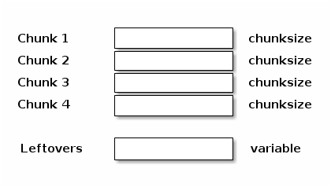
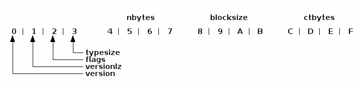

Memory Layout¶
BLZ Arrays¶
The BLZ chunked array behaves similar to a Numpy array but is composed of multiple buffers that are not contiguous in memory.
The chunks are bits of data compressed as a whole, but that can be decompressed partially in order to improve the fetching of small parts of the array. This chunked nature of the BLZ objects, together with a buffered I/O, makes appends very cheap and fetches reasonably fast (although the modification of values can be an expensive operation).

The compression/decompression process is carried out internally by Blosc, a high-performance compressor that is optimized for binary data. That ensures maximum performance for I/O operation.
